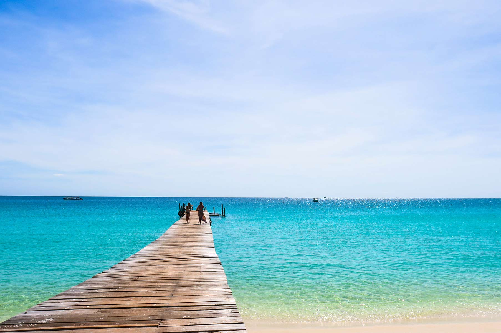

First time I travelled to Cambodia were for five years ago. With no idea what the country had to offer, I only booked a ticket to see the Angkor Wat.
What I discover the most was how friendly people are, heart warming and charming locals can be found almost everywhere. The picture above might not
looks like Cambodia, surprisingly this place stayed unspoiled before all of the new rising chinese casinos.
It's not until late 2017 that I started to saw some changes with my own ewys. New rising buildings in once quit town, called Sihanoukville. Western backpackers
were to find then, until suddenly. I'm finding it's a bit sad that the Cambodian goverment is allowing Chinese to setting up businesseson their own homeland in
exchange for some quick cash. Local business has been overun by the chinese and part of the country just became a new gangster paradise. For sureI will like to
go there again and see whats left after my last visit since I have so many memories from there.
Home